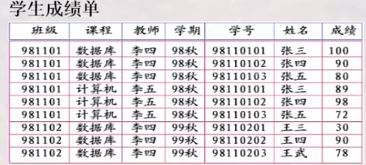
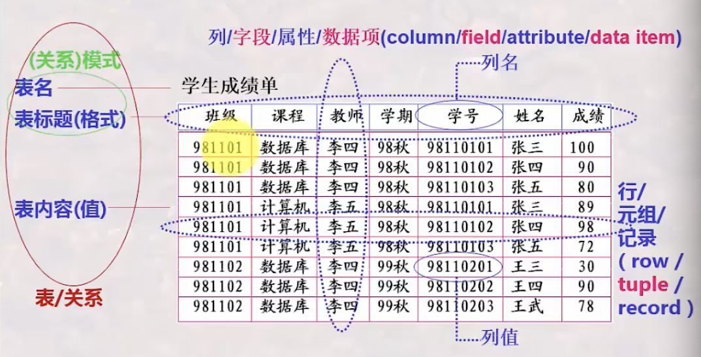
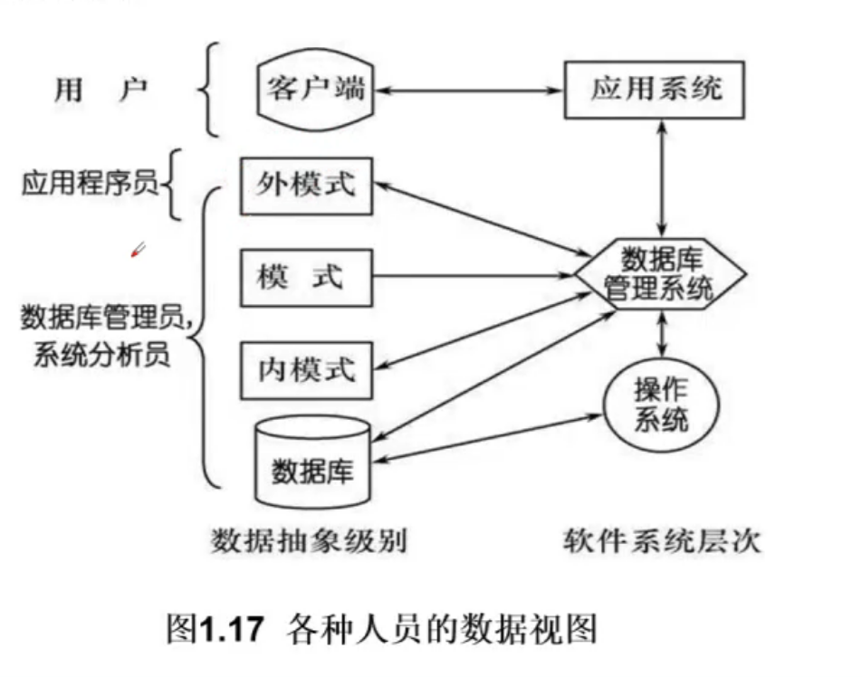
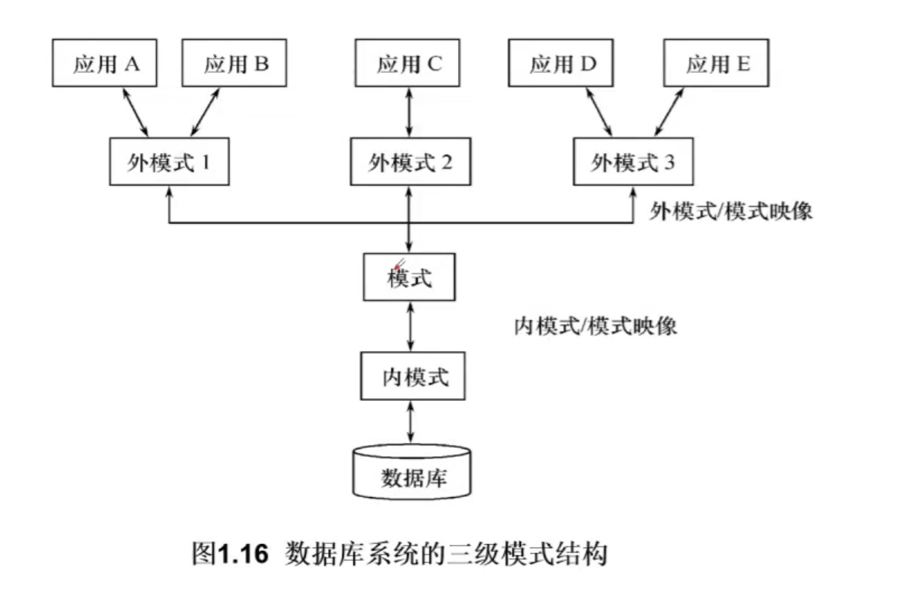
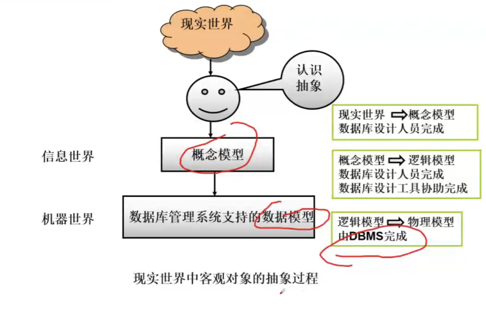
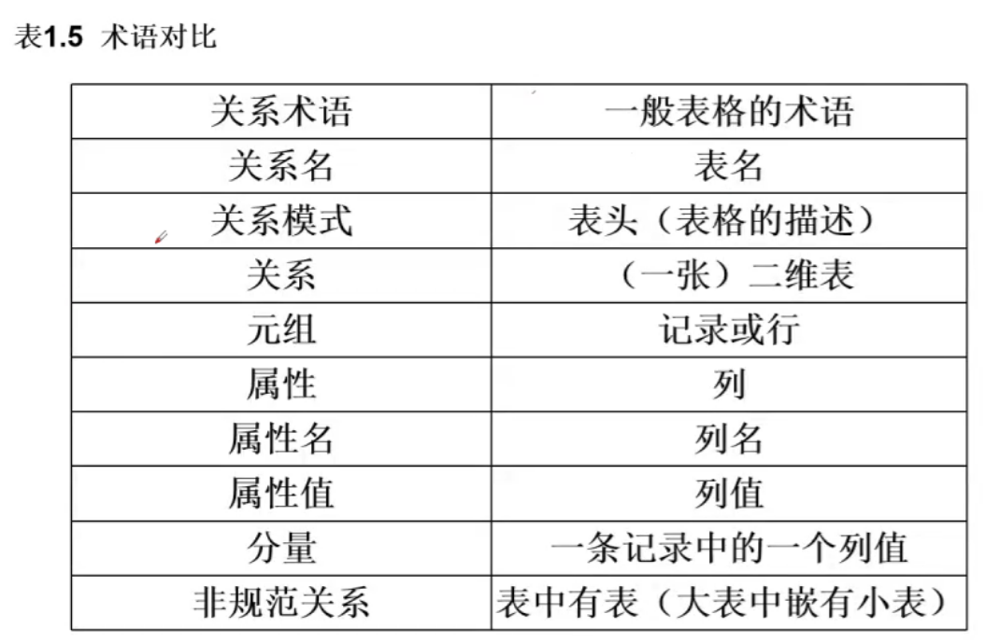

艾力扎提的博客
Zati's Blog
活着就是为了改变世界，难道还有其他原因吗？
——乔布斯
艾力扎提的博客
Zati's Blog
活着就是为了改变世界，难道还有其他原因吗？
——乔布斯
数据库的4个基本概念
数据管理技术的产生和发展
数据模型
数据库是长期存储在计算机内、有组织可共享的大量数据的集合。
简单来说就是相互有关系的数据的集合
数据库起源于“表（Table）的处理”。
表（Table）：以按行按列形式组织及展现的数据。例如：Excel表

表的构成及关于Table的常用术语

用途
数据库定义功能： 定义数据库中表的名称，标题等
数据库操纵功能： 向数据库的表中增加/删除/更新/查询等
数据库控制功能：控制数据库中数 据的使用 --- 哪些用户可以使用，那些不可以
数据库维护功能： 转储/恢复/重组/性能检测/分析
概念
构成
数据库管理员（DBA）
系统分析员和数据库设计人员
应用程序员
最终用户

1.数据库系统模式的概念
2.数据库系统的三级模式结构
3.数据库的二级映像功能与数据独立性
- 模式（Schema）
- 外模式（External Schema）
- 内模式（Internal Schema）

模式（也称逻辑模式）
一个数据库只有一个模式
模式的地位：是数据库系统模式结构的中间层
模式的定义
外模式（也称子模式或用户模式）
外模式的地位：介于模式和应用之间
外模式的用途
内模式（也称存储模式）
一个数据库只有一个内模式
三级模式是对数据的三个抽象级别
二级映像在数据库管理系统内部实现这三个抽象层次的联系和转换
- 外模式/模式映像
- 模式/内模式映像
模式：描述的是数据的全局逻辑结构
外模式：描述的是数据的局部逻辑结构
同一个模式可以有任意多个外模式
每一个外模式，数据库系统都有一个外模式/模式映像，定义外模式与模式之间的对应关系
映像定义通常包含在个字外模式的描述中
当模式改变时，数据库管理员对外模式/模式映像作相应改变，使外模式保持不变
应用程序时依据数据的外模式编写的，应用程序不必修改，保证了数据与程序的逻辑独立性，简称数据的逻辑独立性
模式/内模式映像定义了数据全局逻辑结构与存储结构之间的对应关系。
- 例如，说明逻辑记录和字段在内部如何表示的
数据库模式/内模式映像时唯一的
该映像定义通常包含在模式描述中
时期：20世纪50年代中之前
特点：
时期：20世纪60年代末-现在
产生的背景：
特点：
数据模型是对现实世界数据特征的抽象
通俗的讲数据模型就是现实世界的模拟
数据模型应满足三方面要求
- 能比较真实的模拟现实世界
- 容易为人所理解
- 便于计算机上实现
数据模型是数据库系统的核心和基础
1.数据结构
2.数据操作
3.数据的完整性约束
对数据库中各种对象的实例允许执行的操作的集合，包括操作及有关的操作规则
数据操作的类型
数据模型对操作的定义
数据操作是对系统动态特性的描述
数据模型对完整性约束条件的定义
数据模型分为两类：
（1）概念模型
概念模型也称信息模型，它是按用户的观点来对数据和信息建模，用于数据库设计
（2）逻辑模型和物理模型
- 逻辑模型主要包括网状模型，层次模型，关系模型，面向对象数据模型，对象关系数据模型，半结构化数据模型等。按计算机系统的观点对数据建模，用于DBMS实现
- 物理模型是对数据最底层的抽象，描述数据在系统内部表示方式和存取方法，在磁盘或磁带上的存储方式和存取方法
客观对象的抽象过程 ---- 两步抽象

概念模型的用途
对概念模型的基本要求
信息中的基本概念
概念模式的一种表示方法：实体-联系方法
- 层次模型（Hierarchical Model）
- 网状模型（Network Model）
- 关系模型（Relational Model）
- 面向对象数据模型（Object Oriented Data Model）
- 对象关系数据模型（Object Relational Data Model）
- 半结构化数据模型（SemiStruture Data Model）
层次模型是数据库系统中最早出现的数据模型
层次数据库系统典型代表是IBM公司的IMS数据库管理系统
层次模型用树状结构来表示各类实体以及实体间的联系
优点：
缺点：
网状数据库系统采用网状模型作为数据的组织方式
典型代表是DBTG系统：
- 亦称CODASYL系统
- 20世纪70年代由DBTG提出的一个系统方案
实际系统：
- Cullinet Software 公司的IDMS
- Univac 公司的 DMS1100
- Honeywell公司的IDS/2
- HP公司的IMAGE
满足条件：
关系数据库系统采用关系模型作为数据的组织方式
1970年美国IBM公司San Jose研究室的研究员E.F.Codd首次提出了数据库系统的关系模型
计算机厂商新推出的数据库管理系统几乎都支持关系模型

数据操作：
存取路径对用户硬币，用户只要指出“干什么”，不必详细说“怎么干”
关系的完整性约束条件：
优点：
缺点：